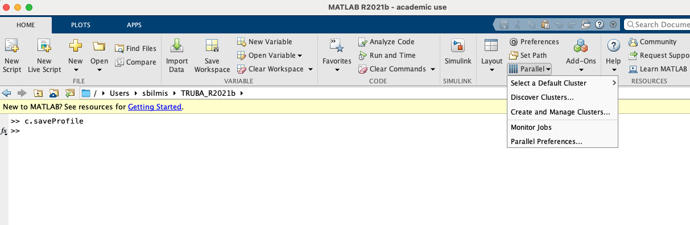
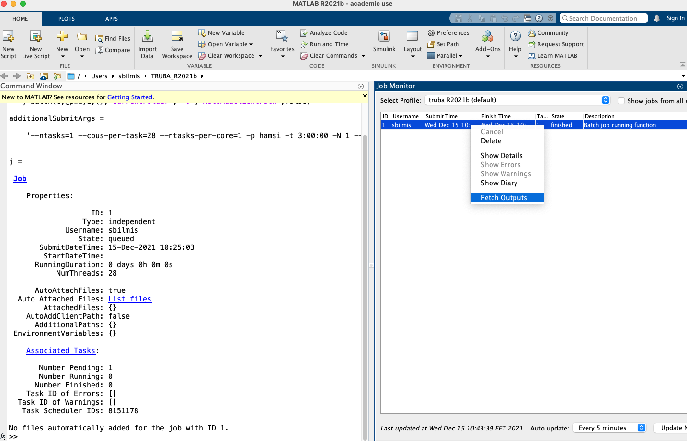

TRUBA’da MATLAB Çalıştırmak için Gerekli Konfigürasyonların Yapılandırılması#
Kişisel Bilgisayarınızda MATLAB Çalıştırırak TRUBA’ya İş Göndermek#
Kullanıcılar tarafından en çok tercih edilen yöntem budur. Bu yöntem ile iş gönderebilmek için kendi bilgisayarınıza ARF kümesi üzerinde yüklü MATLAB versiyonunu yüklemeniz gerekmektedir.
Uyarı
Mevcut durumda ARF kümesinde yüklü olan uygulamaları, derleyicileri, kütüphaneleri listeleyebilmek için kullanıcı ara yüz sunucusuna bağlı iken terminalden
module availablekomutunu yazmanız gerekmektedir.
Sistemde yüklü MATLAB versiyonlarını görmek için
module avail -t 2>&1 | grep -i matlab
komutunu yazmanız gerekmektedir.
Mevcut durumda ARF kümesinde
R2024aversiyonu kurulu olarak bulunmaktadır.Kendi bilgisayarınızda ilgili versiyon için kurulum yapmak üzere MATLAB’ın resmi web sayfasından Mathworks kurulum dosyasını indirebilirsiniz. Akademik lisansa sahipseniz, kullanıcı adı ve şifrenizle giriş yapıp MATLAB’ı indirebilir ve kişisel bilgisayarınıza kurulumu gerçekleştirebilirsiniz. Kurulum sırasında
MATLAB``ile birlikte ``Parallel Computing Toolboxyüklenmelidir.
Not
ARF kümesinde MATLAB kullanılabilmesi için lisansınızın “MATLAB Parallel Server” özelliği olması gerekmektedir. Akademiden kullanıcılarımız bağlı oldukları üniversitelerin Bilgi İşlem Merkezi’nden ilgili lisans özelliğini aktive ettirmesi gerekebilir. Bununla ilgili olarak bağlı olduğunuz birimin Bilgi İşlem Daire Başkanlığı ile iletişime geçiniz. Mathworks hesabınıza girdiğinizde aşağıdaki gibi “MATLAB Parallel Server” özelliğini görmeniz gerekmektedir.
Kişisel bilgisayarınızdan çalıştırdığınız MATLAB ile ARF kümesinde yer alan hesaplama sunucularına iş gönderebilmek için bir seferlik küme ayarının (“parallel cluster”) yapılması gerekmektedir.
MATLAB r2024a versiyonu için ilgili ayar dosyası sıkıştırılmış formatta
/arf/sw/scripts/matlabdizininde yer almaktadır (arf.nonshared.R2024a.zip). Buradan ilgili klasörü kendi bilgisayarınıza indirebilirsiniz. Bunu terminal aracılığıyla aşağıdaki gibiscpkomutu ile yapabileceğiniz gibi winscp, filezilla vb. gibi SFTP yazılımları aracılğıyla da gerçekleştirebilirsiniz.
Not
arf-ui1 kullanıcı arayüz sunucusuna bağlantı sağlamak için OpenVPN bağlantısını sağladıktan sonra terminalde 172.16.6.11 adresini kullanmanız gerekecektir (openvpn-info).
scp -r username@172.16.6.11:/arf/sw/scripts/matlab/arf.nonshared.R2024a.zip ~/ARF_R2024a
İlgili dosyayı ayrıca aşağıdaki ilgili web bağlantısından da indirebilirsiniz:
Not
ARF üzerinde MATLAB R2024a versiyonu yüklüdür. Bu yöntem ile çalışmak istiyorsanız sizin de kendi bilgisayarınıza aynı versiyonu yüklemeniz gerekmektedir.
İlgili versiyon için kurulumu yaparken kurulum sırasında veya kurulum sonrasında (Adds-On -> Get Adds On -> Add-On Explorer penceresinden)
Parallel Computing Toolboxyüklenmelidir.
Uyarı
Aşağıdaki örnek ilgili klasörün yerel bilgisayarınızda
'~/ARF_R2024a'dizini altında olduğu varsayılarak düzenlenmiştir.
Kişisel bilgisayarınızda çalıştırdığınız MATLAB komut penceresinden indirmiş olduğunuz ayar dosyasına gidip,
configClusterkomutunu çalıştırınız. Sonrasında TRUBA kullanıcı adınızı giriniz.
>> cd ~/ARF_R2024a/
>> configCluster
Not
configCluster komutunu çalıştırdığınızda varsayılan kümeniz ARF olarak ayarlanacaktır. Eğer lokal makinenizde küme profili oluşturacaksanız c=parcluster('local'); şeklinde ilgili ayarı değiştirmeniz gerekecektir.
Bu işlemi bir kez gerçekleştirmek yeterlidir. Bundan sonra iş gönderirken çalıştıracağınız işin ihtiyacına göre ilgili iş parametrelerinin belirtilmesi yeterli olacaktır. İlgili yapılandırma ayarları hakkında aşağıda verilen örneği inceleyebilirsiniz.
Hesap ve Kuyruk Parametrelerinin Yapılandırması#
MATLAB’ı çalıştıracağınız küme hakkındaki parametrelerinizi ayarlamanız gerekmektedir. **arf.nonshared.R2024a** dizini içerisindeki arf.m dosyası parametreleri otomatik olarak yapılandırmaktadır. İhtiyacınıza göre ilgili parametreleri bu dosyadan değiştirebilirsiniz. Sonrasıda MATLAB komut satırından arf komutunun çalıştırılması yeterli olacaktir. Ayrıca küme ve işinizle ilgili ayarları MATLAB komut satırı üzerinden de değiştirebilirsiniz. Parametreler ile ilgili aşağıda bir örnek verilmiştir.
Parametreler hakkında ayrıntılı bilgilere MATLAB’ın dokümantasyon sayfasından erişim sağlayabilirsiniz: Parallel Computing Toolbox <https://www.mathworks.com/help/parallel-computing/run-code-on-parallel-pools.html>`
Uyarı
ARF kullanıcı arayüz sunucularına bağlantı sağlayabilmek için, ULAKNET ağı içinde veya dışında olma durumunuz farketmeksizin, öncelikle OpenVPN Bağlantısı yapmanız gerekmektedir.
%%%%%%%%%%%%%%%%%%%%%%%%%%%%%%%%%%%%%%%%%%%%%%%%%
% İş gönderirken belirtilmesi gereken seçenekler
%%%%%%%%%%%%%%%%%%%%%%%%%%%%%%%%%%%%%%%%%%%%%%%%%
% kümeyi oluşturun
c=parcluster;
% Lisansınızı kullanabilmeniz için bu parametreyi aktive etmelisiniz.
c.RequiresOnlineLicensing=true
% bağlanacağınız arayüz makinesinin IP adresini belirtiniz.
% OpenVPN ile bağlantınız mevcut iken arf-ui1 için 172.16.6.11
c.AdditionalProperties.ClusterHost='172.16.6.11';
% ssh portunu ayarlayınız
c.AdditionalProperties.UseSshPort=22;
% işinizi göndereceğiniz kuyruğun adını yazınız: orfoz, barbun, hamsi
c.AdditionalProperties.QueueName='barbun';
% Node sayısını belirtiniz. (Genelde çalıştırılan işler için bir node yeterlidir)
c.AdditionalProperties.Nodes=1
% işinizin süreceği maksimum zamanı giriniz. Aksilik yaşamamanız için tahmin ettiğiniz sürenin %20 fazlasını belirtiniz.
% Maksimum iş çalıştırma süresi 3 gün ile sınırlıdır.
c.AdditionalProperties.WallTime='3:00:00';
% Thread sayısını giriniz. (--cpu-per-task)
c.NumThreads=40;
% küme için mevcut çalışan sayısı
c.NumWorkers=1;
%%%%%%%%%%%%%%%%%%%%%%%%%%%%%%%%%%%%%%%%%
% Tercihen Değiştirilebilecek Seçenekler
%%%%%%%%%%%%%%%%%%%%%%%%%%%%%%%%%%%%%%%%%
% c.AdditionalProperties.EmailAddress = 'your-email@your'
%% Eger her seferinde TRUBA şifrenizi yazmak istemiyorsanız, ssh anahtar ayarini aktif edebilirsiniz.
%c.AdditionalProperties.UseIdentityFile=1
%% ssh anahtarinizin yerini belirtin
%c.AdditionalProperties.IdentityFile='/Users/kullaniciadi/.ssh/id_rsa_truba'
%c.AdditionalProperties.IdentityFileHasPassphrase: 0
%% Debugging ozelligini de tercihe gore degistirebilirsiniz
%c.AdditionalProperties.EnableDebug=true;
%% isinizle ilgili bir rezervasyona sahipseniz belirtebilirsiniz
%c.AdditionalProperties.Reservation='Varsa_rezervasyon_adi'
%% isinizin truba uzerinde nerede saklanacagi ile ilgili yeri belirtebilirsiniz
% c.AdditionalProperties.RemoteJobStorageLocation='/arf/home/kullaniciadi/.matlab/3p_cluster_jobs/arf/kullaniciadi.local/R2024a/nonshared'w
%%%%%%%%%%%%%%%%%%%%%%%%%%%%%%%%%%%%%%%%%%%%%%%%%%%%%%%%%%%%%%%%%%%%%%%%%%%%%%%%%%%%%%%%%%%%%%%%%%%%%%%%%%%
% işinizi kuyruğa göndermeden önce konfigürasyonunuzu tekrar gözden geçirebilirsiniz.
c.AdditionalProperties
% yapmış olduğunuz değişikliklerin farklı MATLAB oturumlarında kayıtlı kalmasını istiyorsanız yapmış olduğunuz değişiklikleri profilinize kaydedin.
c.saveProfile
Yukarıdaki verilen örnekteki veya **arf.nonshared.R2024a** dizini içerisindeki arf.m dosyasını çalıştırdığınızda ``Additional Properties``çıktısı olarak ekranda en son aşağıdaki görseldeki gibi bir çıktı elde edeceksiniz.
Küme ayarlarınız başarıyla oluşturulmuş durumda. Ayrıca Home -> Parallel-> Create and Manage Clusters sekmesi altından oluşturmuş olduğunuz kümenin özelliklerini görebilirsiniz ve bu özellikler üzerinden değişlik yapabilirsiniz. MATLAB’ı kapatıp açsanız da oluşturmuş olduğunuz küme ayarlarınız kayıtlı halde duracaktır. Buradan “default profile” seçimini de gerçekleştirebilirsiniz.
İşlerinizi göndermeden önce küme ayarlarını komut satırı yerine bu arayüz üzerinden de değiştirebilirsiniz. Ayar değişikliğinin aktif olması için parcluster komutunu yeniden çalıştırmanız gerekmektedir:
clear c;
c=parcluster
Not
Küme üzerinde işlerinizin kayıt edildiği yer varsayılan olarak .matlab/3p_cluster_jobs/arf/ARF.R2024a/nonshared klasörüdür. İşinizin durumunu ve sonuçlarını buradan kontrol edebilirsiniz.
İlgili klasörün yerini arf.m dosyası içerisinde
c.AdditionalProperties.RemoteJobStorageLocation='/arf/scratch/username/newpath'
komutu ile de değiştirebilirsiniz.
Herhangi bir parametreyi silmek istediğinizde (örneğin e-posta adresi) değişkeni boş bırakmanız yeterlidir.
c.AdditionalProperties.EmailAddress = ''
MATLAB komut satırından çalıştıracağınız tüm komutlar kişisel bilgisayarınızda çalışacaktır. İşlem gücü gereken fonksiyon ya da dosyaları ARF üzerinde çalıştırmak için ilgili kod parçasını batch komutu ile kuyruğa göndermeniz gerekecektir. Detaylar için MATLAB’ın dokümantasyon sayfasından bilgi edinebilir ve aşağıdaki örnekleri inceleyebilirsiniz.
Slurm Parametresi |
MATLAB Karşılığı |
Açıklama |
|---|---|---|
|
|
|
|
|
en fazla |
|
|
Uyarı
Orfoz kuyruğunda sunucu başına minimum 55, maksimum 110 çekirdek kullanılabilir. Orfoz kuyruğuna gönderilecek işler 55 ve katlarında çekirdek kullanmalıdır.
Hamsi kuyruğunda sunucu başına minimum 54 çekirdek kullanılabilir. Hamsi kuyruğuna gönderilecek işler 54 ve katlarında çekirdek kullanmalıdır.
Barbun kuyruğunda sunucu başına minimum 20, maksimum 40 çekirdek kullanılabilir. Barbun kuyruğuna gönderilecek işler 20 ve katlarında çekirdek kullanmalıdır.
Örnek 1: Dahili Komutlar ya da Fonksiyonlar#
Bu örnekte dahili pwd komutu/fonksiyonu kuyruk üzerinde çalıştırılacaktır.
j=batch(c,@pwd,1,{},'CurrentFolder', '.','AutoAddClientPath',false)
İşinizi gönderdiğinizde, şekilde görüldüğü gibi TRUBA şifrenizin girilmesi istenecektir. Bu sorgu ekranı gelmiyorsa yukarıdaki küme ayarlarınızı kontrol ediniz. Ayrıca batch komutunun nasıl kullanılacağı ve ilgili parametrelerin ne olduğu hakkında bilgiye MATLAB yardım merkezinden erişim sağlayabilirsiniz.
İşinizi gönderdiğinizde bir “SLURM JobID” si atanacaktır. Ayrıca arf-ui kullanıcı arayüz suncuusu üzerinden squeue komutu ile de işinizin durumunu öğrenebilirsiniz.
MATLAB komut penceresi üzerinden işinizin durumu hakkında bilgi edinebilirsiniz.
% işinizin durumu hakkındaki bilgi için:
j.State
% işiniz sonucunu çağırmadan önce bitmesini beklemek için:
j.wait
% iş bittiğinde sonucu görmek için:
j.fetchOutputs
% işiniz artık gerekli değilse işinizi silmek için:
j.delete
% eğer var olan tüm işleri silmek isterseniz
delete(c.Jobs)
Ayrıca iş paketi yöneticisi (slurm) ile ilgili kimi parametrelere de MATLAB üzerinden erişebilirsiniz.
% Slurm jobid bilgisini elde etmek icin
getTaskSchedulerIDs(j)
%% Gondermis oldugunuz isle ilgili slurm bilgisini ekrana yazdirmak isterseniz
setSchedulerMessageHandler(@disp)
% debug bilgisi edinmek icin
getDebugLog(c,j)
İşinizin durumunu ayrıca “MATLAB Job Monitor Tool” ile de görebilirsiniz. İşinizle ilgili sonucu bu arayüz aracılığıyla da çekebilirsiniz.
 Not
İşinizi kuyruğa gönderdikten sonra oturumunuzu açık tutmanıza gerek yoktur. İşiniz tamamlandığında MATLAB’ı tekrar çalıştırıp biten işlerinizin durumunu görebilir ve sonuçlarınızı çağırabilirsiniz. Bu işlemi “MATLAB Job Monitor Tool” ile yapabileceğiniz gibi komut satırından da gerçekleştirebilirsiniz.
c=parcluster;
jobs=c.Jobs
%% ID numarası 2 olan işi seç
j2 = c.Jobs(2)
j2.fetchOutputs
Örnek 2: *.m dosyaları#
Dahili komutlar ve fonksiyonların yanı sıra MATLAB betik dosyalarını da (*.m) kuyrukta çalıştırmanız mümkündür.
%% test2.m içerigi
pwd
ls -al
a = 5; b = 7
g = a + b
d = g + sin(b)
e = 5 * d
f = exp(-d)
Bu dosyayı aşağıdaki komutla kuyruğa gönderebilirsiniz:
j=batch('test2','CurrentFolder','/arf/home/kullanici_calisma_dizini/', 'AutoAddClientPath',false);
Bu dosya kuyrukta çalışıp sonlandıktan sonra, ekran çıktılarını
diary(j)
komutu ile alabilirsiniz. Ayrıca dosya içerisinde kullanılan değişkenlerin son değerlerini,
load(j)
lokal arayüzünüze alabilirsiniz.
Örnek 3: Lokal dosyadan veri okumak ve sonuçları merkezi dizinde dosyaya yazmak#
Aşağıdaki örnekte kuyruğa göndereceğimiz betik, lokal dizinimizdeki veriyi okuyup işleyecek ve sonucu merkezi dizine yazacaktır.
% test3.m içerigi
pwd
fileID = fopen('input.txt','r');
formatSpec = '%d %f';
sizeA = [2 Inf];
A = fscanf(fileID,formatSpec,sizeA)
A
fclose(fileID);
x = 1:1:5;
y = [x;rand(1,5)];
fileID = fopen('output.txt','w');
fprintf(fileID,'%d %4.4f\n',y);
fclose(fileID);
Bu dosya kuyruğa aşağıdaki komutla gönderilir.
j=batch('test3','CurrentFolder','/arf/home/kullanici_calisma_dizini/', 'AutoAddClientPath',false);
Bu dosya kuyrukta çalışıp sonlandıktan sonra, ekran çıktılarını
diary(j)
komutu ile alabilirsiniz. Ayrıca dosya içerisinde kullanılan değişkenlerin son değerlerini,
load(j)
lokal arayüzünüze alabilirsiniz.
Örnek 4: Paralel iş çalıştırma (paralel for, MPI)#
MATLAB’ın neredeyse tüm fonksiyonları node için paralelleştirmeyi (OpenMP) hali hazırda desteklemektedir. Bu desteği kullanmak için kodda ekstra değişiklikler yapmaya gerek bulunmamaktadır. Herhangi bir MATLAB fonksiyonu çalıştırıldığında, kod sunucuda izin verilen tüm çekirdekleri kullanacaktır.
MATLAB aynı zamanda sunucular arası paralelleştirmeyi (MPI) de desteklemektedir. Büyük for döngüleri ya da destekeleyen diğer fonksiyonlar, birkaç basit değişiklikle nodelar arası paralel çalışır hale getirilebilir. Aşağıdaki kod parçasında paralel for döngüsü kullanılmıştır.
%% test4.m dosyasinin icerigi
function t = parallel_example(iter)
if nargin==0, iter = 16; end
disp('Start sim')
t0 = tic;
parfor idx = 1:iter
A(idx) = idx;
pause(2)
end
t = toc(t0);
disp('Sim completed.')
Kodu kuyruğa göndermek için
c.NumThreads=7;
j = batch(c,@test4, 1, {}, 'pool',3,'CurrentFolder', '.','AutoAddClientPath',false)
Uyarı
işinizi gönderdiğinizde config ayarlarınıza göre aşağıdaki gibi bir çıktı göreceksiniz.
additionalSubmitArgs = '--ntasks=4 --cpus-per-task=7 -p hamsi -t 3:00:00 -N 1 '
pool sayisi --ntask parametresine karşılık gelmektedir. Bir çekirdek işi orkestra eden olarak ayrıldığından pool sayısı "ntasks-1" şeklinde girilmelidir. Hamsi kümesi için Number_of_nodes x (pool + 1) x num_Threads = 28 ve katlari seklinde belirtilmelidir. Bu parametreleri işinizin yapısına göre düzenlemeniz gerekmektedir. Yüksek çekirdek talebi işinizin daha kısa sürede tamamlanacağı anlamına gelmemektedir, işinizin yapısına düzenlemeniz gerekmektedir.
Ek Notlar#
Örnek betik dosyalarına
/arf/sw/scripts/matlabdizininden erişim sağlayabilirsiniz.Mathworks tarafından organize edilen TRUBA üzerinde MATLAB kullanımı ile ilgili yansılara
buradanve seminerin videosuna ise YouTube kanalımızdan erişebilirsiniz.
Dökümanla ilgili eksik ya da hata bulmanız durumunda bizlere grid-teknik@ulakbim.gov.tr adresinden erişebilirsiniz. Eklenmesini istediğiniz bilgiler için de bizlere aynı adresten ulaşabilirsiniz.


{kind=link}
{kind=link}
{kind=link}
{kind=link}
{kind=link}
{kind=link}
{kind=link}
{kind=link}
{kind=link}
{kind=link}
{kind=link}